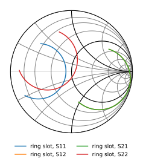

scikit-rf — Object Oriented RF Engineering#
scikit-rf (aka skrf) is an Open Source, BSD-licensed package for RF/Microwave engineering implemented in the Python programming language. It provides a modern, object-oriented library for network analysis and calibration which is both flexible and scalable.
Getting Started#
Plot touchstone data on a smith chart, in 3 lines.
import skrf as rf
ntwk = rf.Network('ring slot.s2p')
ntwk.plot_s_smith()
Install it from pip or conda-forge, as described in Installation.
python -m pip install scikit-rf
conda install -c conda-forge scikit-rf

Some Examples#


Features#
Microwave Network Operations:
Read/Write touchstone (.s2p, s?p) files
Arithmetic operations on scattering parameters
Cascade/De-embed 2-port networks
Frequency and port slicing and concatenation.
Connect n-port networks
s/z/y/abcd/t - parameter conversion
Plotting abilities:
Rectangular Plots (dB, mag, Phase, group delay)
Smith Chart
Automated Uncertainty bounds
Metrology and Offline Calibration:
One-Port: SOL, Least Squares, SDDL
Two-Port: TRL, Multiline TRL, SOLT, Unknown Thru, 8/16-Term
Partial : Enhanced Response, One-Port Two-Path
Sets of Networks:
Statistical properties of NetworkSets
Methods to sort and visualize set behavior
Circuit builder
Transmission Line Physics:
Coax, CPW, Freespace, RectangularWaveguide, DistributedCircuit
Questions or comments? Ask the Community#
LinkedIn scikit-rf Users Group: User group to ask and answer questions and to received scikit-rf announcements.
Chat: scikit-rf has a channel on Matrix
Suggestion box: if you would like to suggest a feature/topic for consideration (optionally anonymous).
If you use scikit-rf, see Acknowledging or Citing scikit-rf.